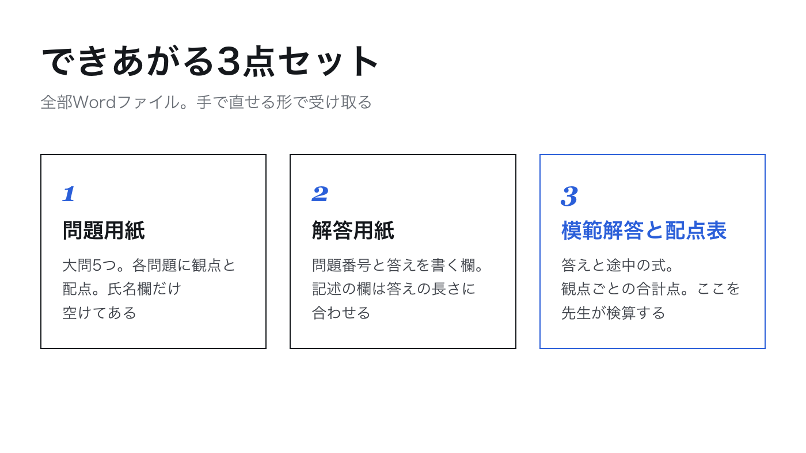
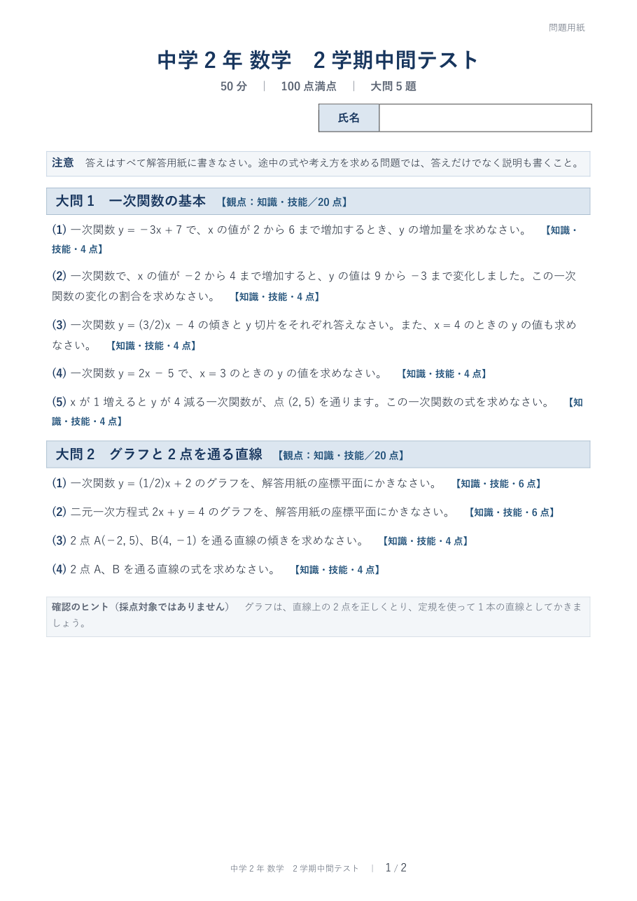
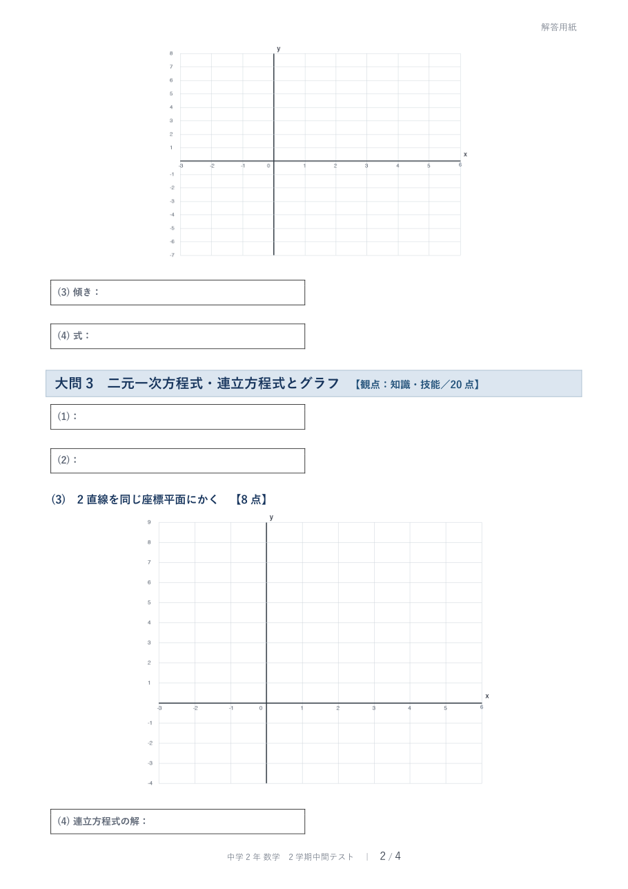

直しを日本語で頼む
このフォルダにある3つのWordファイル（問題用紙・解答用紙・模範解答と配点表）を直してください。
大問ごとに改ページしないでください。問題用紙は2ページに収め、解答用紙の最後の空白ページをなくす
グラフの x 軸の「x」の文字が目盛りの数字と重なっているので、重ならない位置に置く
大問1の(3)は、傾きと y 切片を答えるだけでは易しすぎるので、「x = 4 のときの y の値」も答えさせる問題に変える。配点は変えない
直したら、変えたところを日本語で短く報告してください。
すると何が起きるかCodexが3つのファイルを読み直し、改ページとグラフの描き方を変え、問題文と模範解答と配点表の3か所を同時に書き換えます。私のときは約25分で、元のファイルは残したまま「_修正版」という名前で3つ作ってくれました。
修正版を作成しました。
- 問題用紙：2ページ構成に整理し、大問1(3)を変更。
- 解答用紙：不要な改ページ・末尾の空白ページ要因を除去し、解答欄とグラフを修正。
- 模範解答・配点表：新しい解答「y＝2」と採点基準を追加。合計4点は維持。
全6グラフの「x」は目盛りの「6」と重ならない位置へ移動しました。構造検査とグラフ画像の目視確認は済んでいますが、環境にLibreOfficeがないためWordページ全体のレンダリング確認は未実施です。
直ったところを見る


「中2数学_2学期中間テスト_解答用紙_修正版.docx」をWordで開くと、最後の4ページ目が白紙のまま残っています。末尾の改ページや空の段落を消して、白紙ページをなくしてください。中身は変えないでください。直したら短く報告してください。
すると何が起きるか私のときは約3分で「末尾の空段落を削除し、白紙ページが残らないよう修正しました。本文は変更していません」と返ってきました。Wordで開き直すと、解答用紙は4ページから3ページになり、白紙ページは消えていました。
直しの頼み方のこつは1つだけです。「どのファイルの、どこが、どうなっている」を書く。「もっと見やすく」ではなく「4ページ目が白紙で残っている」と書くと、1回で通ります。
よく使う直しの頼み方
- 易しくする
- 「大問4の(3)は難しすぎるので、追いつく時刻だけを聞く問題にしてください。配点はそのまま」
- 記述を足す
- 「大問3に、なぜグラフの交点が連立方程式の解になるのかを説明させる問題を1つ足してください。配点は大問3の中で調整して合計20点のまま」
- 解答欄を広げる
- 「解答用紙の大問5の(3)は説明を書く問題なので、欄を3行分に広げてください」
- 別の版を作る
- 「同じ構成で、数値だけ変えた再テスト用の版をもう1組作ってください。ファイル名の末尾に_Bをつけて」
- 自分で直す
- Wordファイルなので、細かい言い回しは自分の手で直してかまいません。ただし問題の数値を変えたら、模範解答と配点表も自分で直します
数学以外の教科では
- 国語
- 「説明文の要旨をとらえる」「接続語の働き」「漢字の読み書き20問」のように、身につけさせたい力を書く。教科書の本文は貼らない。Codexが自分で短い文章を書いて問題にする
- 英語
- 文法事項（「be動詞の過去形」「不定詞の3用法」）と、扱った場面（「道案内」「自己紹介」）を書く。リスニングは音声が要るので、筆記の問題だけ頼む
- 社会
- 単元名と、「資料を読み取って答える問題を2つ入れる」のように問題の型を書く。資料の図表はCodexに作らせるか、自分で用意する
- 理科
- 単元名と、扱った実験名を書く。「実験の結果から考察を書かせる問題を1つ」のように型を書くと、観察・実験の観点が入る
どの教科でも、教科書の本文・図・問題を範囲メモに写さないところは同じです。理由は第5回でお話しします。
印刷する
- 「_修正版」の3つのファイルをWordで開き、印刷プレビューで全ページを見る
- 問題用紙と解答用紙を、それぞれ人数分刷る。両面か片面かは学校の慣例に合わせる
- 模範解答と配点表は自分用に1部。採点前に、次回の「全問を自分で解く」をここでやる
第3回で作らせた自分のテストを全ページ開いて、直したいところを3つ書き出してください。「どのファイルの、どこが、どうなっている」の形で。それをそのままCodexに貼れば、頼み方2になります。